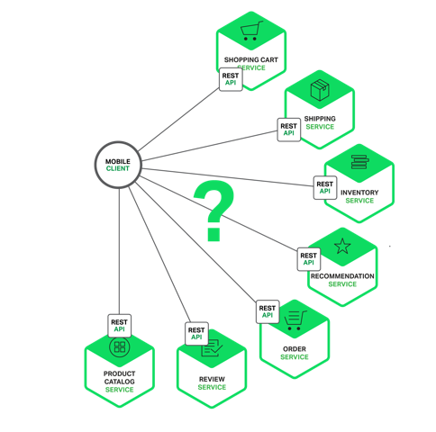
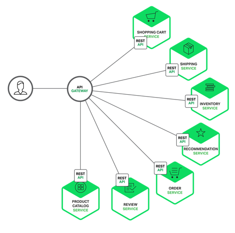

API Gateway 简介
以下内容摘自《微服务：从设计到部署》
当您选择将应用程序构建成为一组微服务时，您需要决定应用程序客户端将如何与微服务进行交互。单体应用程序只有一组端点（endpoint），通常使用复制（replicated）结合负载均衡来分配流量。
然而，在微服务架构中，每个微服务都暴露一组通常比较细颗粒的端点。在本文中，我们将研究如何改进客户端通信，并提出一个使用 API 网关的方案。
我们假设您正在为一个购物应用开发一个原生移动客户端。您可能需要实现一个产品详细信息页面，用于展示给定商品的信息。正如下图所示，当我们在亚马逊的安卓移动应用中滚动产品明细页时，它将会呈现给我们
这是一个智能手机应用，产品详细信息页面展示了许多信息。不仅有基本的产品信息，如名称、描述和价格，页面还展示了：
- 购物车中的物品数量
- 订单历史
- 客户评价
- 低库存警告
- 配送选项
- 各种推荐，包括了购买此产品的客户购买的其他产品
- 选择性购买选项
在使用单体应用架构的情况下，移动客户端通过对应用程序进行单个 REST 调用来检索此数据，例如：
GET api.company.com/productdetails/productId
负载均衡器将请求路由到几个相同应用程序实例中的其中一个。之后，应用程序查询各个数据库表并返回响应给客户端。相比之下，当使用微服务架构时，产品详细页面上展示的数据来自多个微服务。以下是一些微服务，可能拥有给定产品页面展示的数据：
- 订单服务 — 订单历史
- 目录（catalog）服务 — 基本的产品信息，如产品名称、图片和价格
- 评价服务 — 客户评价
- 库存服务 — 低库存警告
- 配送服务 — 配送选项、期限和费用，由配送方的 API 单独提供
- 推荐服务 — 推荐类目

我们需要决定移动客户端如何访问这些服务。让我们来看看有哪些方法。
客户端与微服务直接通信
理论上，客户端可以直接向每个微服务发送请求。每个微服务都有一个公开的端点：
https://serviceName.api.company.name
该 URL 将映射到用于跨可用实例分发请求的微服务负载均衡器。为了检索特定的产品页面信息，移动客户端将向上述的每个微服务发送请求。
不幸的是，这种方式存在着挑战与限制。第一个问题是客户端的需求与每个微服务暴露的细粒度的 API 不匹配。在此示例中，客户端需要进行七次单独请求。如果在更加复杂的应用中，它可能需要做更多的工作。例如，Amazon 展示了在产品页面渲染中如何牵涉到数百个微服务。虽然客户端可以通过 LAN 发送许多请求，但在公共互联网下效率低下，在移动网络必然是不切实际。
客户端直接调用微服务存在的另一个问题是有些可能使用了非 web 友好协议。一个服务可能使用了 Thrift 二进制 RPC，而另一个则可能使用 AMQP 消息协议。这两个协议无论是对浏览器还是防火墙都是不友好的，最好是在内部使用。应用程序在防火墙之外应该使用 HTTP 或者 WebSocket 之类的协议。
这种方法的另一个缺点是它难以重构微服务。随着时间推移，我们可能会想改变系统划分服务。例如，我们可能会合并两个服务或者将服务拆分为两个或者多个。然而，如果客户端直接与服务进行通信，实施这类的重构将变得非常困难。
由于存在这些问题，很少有客户端直接与微服务进行通信。
使用 API 网关
通常更好的方法是使用 API 网关。API 网关是一个服务器，是系统的单入口点。它类似于面向对象设计模式中的门面（Facade）模式。API 网关封装了内部系统架构，并针对每个客户端提供一个定制 API。它还可用于认证、监控、负载均衡、缓存和静态响应处理。

API 网关负责请求路由、组合和协议转换。所有的客户端请求首先要通过 API 网关，之后请求被路由到适当的服务。API 网关通常会通过调用多个微服务和聚合结果来处理一个请求。它可以在 Web 协议（如 HTTP 和 WebSocket）和用于内部的非 Web 友好协议之间进行转换。
API 还可以为每个客户端提供一个定制 API。它通常会为移动客户端暴露一个粗粒度的 API。例如，考虑一下产品详细信息场景。API 网关可以提供一个端点 /productdetails?productid=xxx，如上图所示，一个使用了 API 网关的微服务。允许移动客户端通过一个单独的请求来检索所有产品详细信息。API 网关通过调用各种服务（产品信息、推荐、评价等）并组合结果。
一个很好的 API 网关案例是 Netflix API 网关。Netflix 流媒体服务可用于数百种不同类型的设备，包括电视机、机顶盒、智能手机、游戏机和平板电脑等。起初，Netflix 尝试为他们的流媒体服务提供一个通用的 API。后来，他们发现由于设备种类繁多，并且他们各自有着不同需求，所以并不是能很好地运作。如今，他们使用了 API 网关，通过运行特定设备适配代码来为每个设备提供一个定制 API。
API 网关的优点与缺点
正如您所料，使用 API 网关同样存在好处与坏处。使用 API 网关的主要好处是它封装了应用程序的内部结构。客户端只需要与网关通信，而不必调用特定的服务。API 网关为每种类型的客户端提供了特定的 API，减少了客户端与应用程序之间的往返次数。同时，它还简化了客户端的代码。
API 网关也存在一些缺点，它是另一个高度可用的组件，需要开发、部署和管理。另外，还有一个风险是 API 网关可能会成为开发瓶颈。开发人员必须更新 API 网关以暴露每个微服务的端点。
重要的是更新 API 网关的过程应尽可能地放缓一些。否则，开发人员将被迫排队等待网关更新。尽管 API 网关存在这些缺点，但对于大多数的真实应用来说，使用 API 是合理的。
实施 API 网关
我们已经了解了使用 API 网关的动机与权衡。接下来让我们看看您需要考虑的各种设计问题。
性能与可扩展性
只有少数公司能达到 Netflix 的运营规模，每天需要处理数十亿的请求。然而，对于大多数应用来说，API 网关的性能和可扩展性是相当重要的。因此，在一个支持异步、非阻塞 I/O 平台上构建 API 网关是很有必要的。可以使用不同的技术来实现一个可扩展的 API 网关。在 JVM 上，您可以使用基于 NIO 的框架，如 Netty、Vertx、Spring Reactor 或者 JBoss Undertow。一个流行的非 JVM 选择是使用 Node.js，它是一个建立在 Chrome 的 JavaScript 引擎之上的平台。
使用响应式编程模型
API 网关通过简单地把他们（请求）路由到适当的后端服务来处理一些请求。它通过调用多个后端服务并聚合结果来处理其他请求。对于某些请求，如产品详细信息请求，对后端服务请求而言是彼此独立的。为了把响应时间缩短到最小，API 网关应该并发执行独立请求。
然而，有时候，请求是相互依赖的。首先，API 网关可能需要在将请求路由到后端服务之前，通过调用验证服务来验证请求。同样，为了从客户的愿望清单中获取产品信息，API 网关首先必须检索包含该信息的客户资料，然后检索每个产品的信息。另一个有趣的 API 组合案例是 Netflix 视频网格。
使用传统的异步回调方式来编写 API 组合代码会很快使你陷入回调地狱。代码将会变得杂乱、难以理解并且容易出错。一个更好的方式是使用响应式方法以声明式编写 API 网关代码。响应式抽象的例子包括 Scala 的 Future、Java 8 中的 CompletableFuture 和 JavaScript 中的 Promise。还有 Reactive Extensions（也称为 Rx 或 ReactiveX），最初由 Microsoft 为 .NET 平台开发。Netflix 为 JVM 创建了 RxJava，专门应用于其 API 网关。还有用于 JavaScript 的 RxJS，它可以在浏览器和 Node.js 中运行。使用响应式方式可让您能够编写出简单而高效的 API 网关代码。
服务调用
一个基于微服务的应用程序是一个分布式系统，必须使用一个进程间（inter-process）通信机制。有两种进程间通信方案。一是使用基于消息的异步机制。某些实现采用了消息代理，如 JMS 和 AMQP。其他采用无代理的方式直接与服务通信，如 Zeromq。
另一种类型的进程间通信采用了同步机制，如 HTTP 和 Thrift。系统通常会同时使用异步和同步方式。甚至可以为每种方式应用多个实现。因此，API 网关需要支持各种通信机制。
服务发现
API 网关需要知道与其通信的每个微服务的位置（IP 地址和端口）。在传统应用程序中，您可以将这些位置硬编码，但在现代基于云的微服务应用程序中，找到所需的位置不是一件简单的事情。
基础设施服务（比如消息代理）通常都有一个可以通过系统环境变量来指定的静态位置。但是，要确定应用程序服务的位置并不是那么容易。
应用服务可以动态分配位置。此外，由于自动扩缩和升级，一个服务的整组实例可以动态变更。因此，API 网关与系统中的任何其他服务客户端一样，需要使用系统的服务发现机制：服务端发现或客户端发现。第四章中更详细地描述了服务发现。现在需要注意的是，如果系统使用客户端发现，API 网关必须能够查询服务注册中心，该注册中心是所有微服务实例及其位置的数据库。
处理局部故障
实施 API 网关时必须解决的另一个问题是局部故障问题。当一个服务调用另一个响应缓慢或者不可用的服务时，所有分布式系统都会出现此问题。API 网关不应该无期限地等待下游服务。但是，如何处理故障问题取决于特定的方案和哪些服务发生故障。例如，如果推荐服务在获取产品详细信息时没有响应，API 网关应将其余的产品详细信息返回给客户端，因为它们对用户仍然有用。建议可以是空的，也可以用其他代替，例如硬编码的十强名单。然而，如果产品信息服务没有响应，那么 API 网关应该向客户端返回错误。
如果可以，API 网关还可以返回缓存数据。例如，由于产品价格变化不大，当价格服务不可用时，API 网关可以返回被缓存的价格数据。数据可以由 API 网关缓存或存储在外部缓存中，如 Redis 或 Memcached。API 网关通过返回默认数据或缓存数据，确保系统发生故障时最小程度上影响到用户体验。
Netflix Hystrix 是一个非常有用的库，用于编写调用远程服务代码。Hystrix 可以使超出指定阈值的调用超时。它实现了断路器模式，防止客户端不必要地等待无响应的服务。如果服务的错误率超过指定阈值，Hystrix 将会跳闸，所有请求将在指定的时间内立即失败。Hystrix 允许您在请求失败时定义回退操作，例如从缓存读取或返回默认值。如果您正在使用 JVM，那么您一定要考虑使用 Hystrix。如果您是在非 JVM 环境中运行，则应使用同等作用的库。
总结
对于大多数基于微服务的应用程序来说，实现一个 API 网关是很有意义的，API 网关充当着系统的单入口点，并且负责请求路由，组合和协议转换。它为每个应用程序客户端提供了一个自定义 API。API 网关还可以通过返回缓存或默认数据来掩盖后端服务故障。